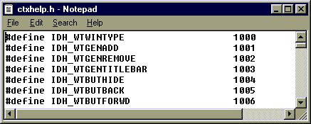

|
| ||
|
| ||
Microsoft Corporation
Updated June 10, 1999
#define IDH_symbolicID 1000
Where symbolicID is the symbolic ID for part of the program (such as a dialog box or control) and 1000 is the numeric ID. The numeric IDs in the header file are used only by the HTML Help compiler. The compiler maps numeric IDs in the header file to help topics.
The following sample header file is taken from HTML Help Workshop:

IDH_ prefix with the symbolic ID, as shown in the example above, HTML Help Workshop will automatically check that the topics mapped in your project file actually exist in your compiled help (.chm) file, and that your context-sensitive help topics are all mapped in your project file.
 |
Create a [TEXT POPUPS] section in a project file |
Did you find this material useful? Gripes? Compliments? Suggestions for other articles? Write us!
© 1999 Microsoft Corporation. All rights reserved. Terms of use.